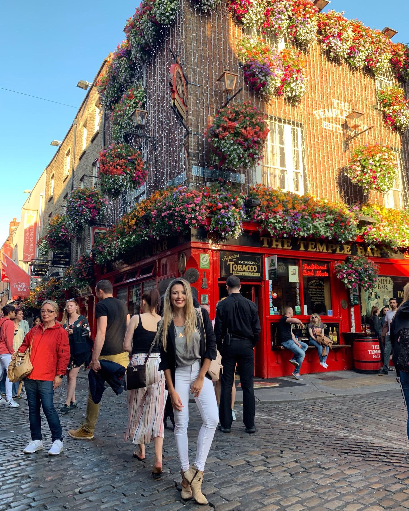

Hola a todos!! Me llamo Antonella y si estas buscando la motivacion que te falta para comenzar tu vida europea, llegaste al sitio indicado. Donde puedo brindarte toda mi ayuda y experiencia de como es la vida en Irlanda, como se hace la ciudadania italiana en Italia y por que no que me acompañes en mis recorridos por el viejo continente y el resto del mundo.

Bienvenidos, soy Antoo Ortiz

Todavia estas buscando excusas y no te atreves a dar ese gran paso? No estas seguro de tu nivel de ingles? No tenes pasaporte europeo? Tranquilos, pase por todas y cada una de esas etapas por eso ahora decido acompañarte. Vamos a descubrir como es Vivir en Irlanda.Esta es tu GRAN oportunidad para venir a vivir a Europa. Necesitas una visa de estudio o trabajo porque no contas con pasaporte europeo? Te explico como hacerlo y que necesitas para empezar tu vida en Irlanda. Estas queriendo obtener tu ciudadania italiana, pero en Argentina el tramite se hace muy largo? No te preocupes! te ayudo a obtener tu ciudadania italiana en Italia.
.JPG)
 @antoortizok
@antoortizok
 @antonellaortiz
@antonellaortiz